Кейс
CATARSIS
Сайт жіночого освітнього клубу, зібраний як перший номер глянцевого журналу.
- Формат
- Концепт для портфоліо
- Що зроблено
- Айдентика, тексти, сайт на 11 розворотів
- Інструменти
- HTML, CSS, JavaScript, SVG
- Екрани
- Від 360 до 1440 px
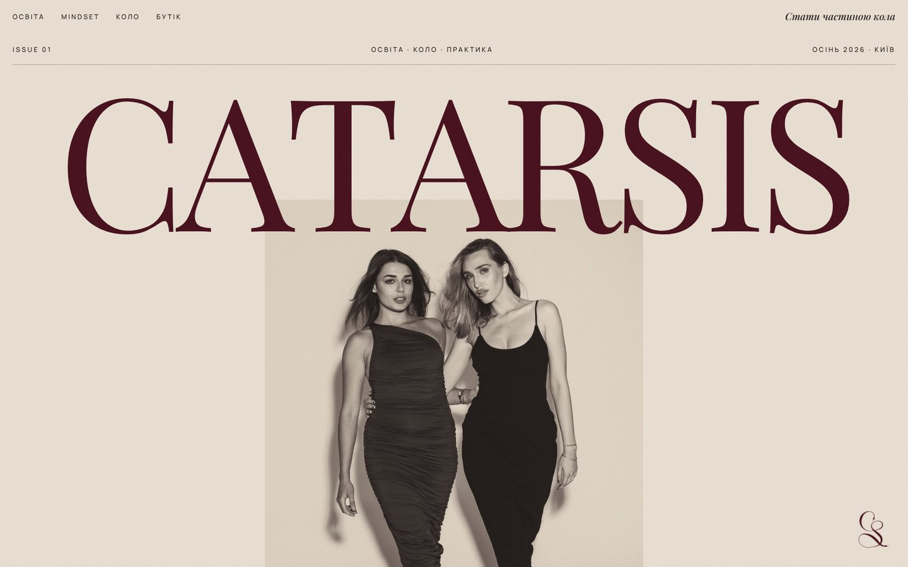
Не ще один курс
Клуб збирає жінок довкола лекцій і практик про тіло, стосунки, самоцінність і внутрішню опору. Членство тут — привілей, а не підписка.
Сайти курсів і клубів зазвичай побудовані однаково: «біль, програма, ціна, кнопка». Для закритого кола, куди «не потрапляють випадково», такий формат знецінює саму ідею. Сайт мав відчуватися як річ, яку хочеться тримати в руках, і м'яко вести до анкети.
Концепт: бренд, тексти, людей на фото й події вигадано, анкети на сайті демонстраційні.
Сайт — це Issue 01
Кожен розділ сайту оформлено як частину журналу, а не як «блок лендингу»:
- обкладинка з мастхедом, анонсами номера й штрихкодом;
- зміст з номерами сторінок, і на кожному розвороті є колонтитул із номером сторінки;
- лист редактора, рубрики Education, Mindset, Community, героїні номера, світська хроніка;
- «вибір редакції» — бутік, де нічого не продається за гроші;
- членство замість кнопки «купити»: анкета, яку читають особисто.
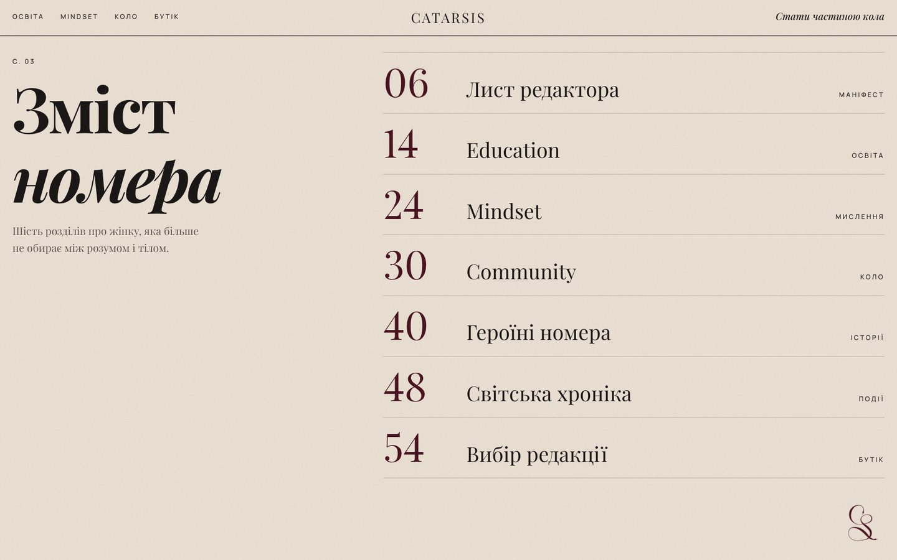
Матовий папір, зелень і бордо
Палітра світла, як у друкованому виданні: основа — папір, а темні кольори займають цілі розвороти, як вклейки в журналі. Поверх усієї сторінки лежить ледь помітне зерно паперу.
- Папір
#ECE3D6Основні сторінки: зміст, лист редактора, героїні, бутік. - Зелень
#2F3328Розвороти про освіту й хроніку. - Бордо
#4A1320Коло й членство, мастхед, акценти. - Чорнило
#1B1716Текст і таємний поверх.
Монограма. Змія одним рухом складається в літери C і S: CATARSIS і SIS, так у клубі називають своїх. Монограма живе в правому нижньому куті як закладка й змінює колір під розворот.
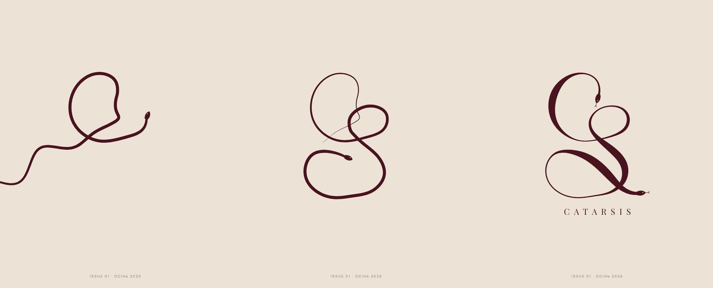
Сайт, який гортають
- iІнтро зі змієюЗмія вповзає на екран, згортається в монограму, а потім та відлітає в кут і стає закладкою: клік повертає на обкладинку. Інтро можна пропустити, а з увімкненим «зменшити анімацію» його немає.
- iiПерегортання кольоруПід час прокрутки фон плавно перетікає з паперу в зелень і бордо. Кольори змішуються в просторі OKLab, тому між ними немає брудних сіро-коричневих відтінків.
- iiiПоява тексту й фотоРядки заголовків виїжджають знизу по черзі, фото відкриваються «шторкою». Лише при першій появі на екрані.
- ivМонета SI-POINTSВалюта клубу у вигляді об'ємної монети з монограмою. При наведенні вона перевертається, тінь стискається, як у справжньої монети.
- vТаємний поверхДолистайте до підвалу й «постукайте» прокруткою тричі: напис тріскається, літери падають, відкривається таємний вхід із бонусом +50 SI-POINTS. На телефоні стуки віддаються вібрацією.
- viМеню-змістНа телефоні меню відкривається як сторінка змісту з номерами сторінок.
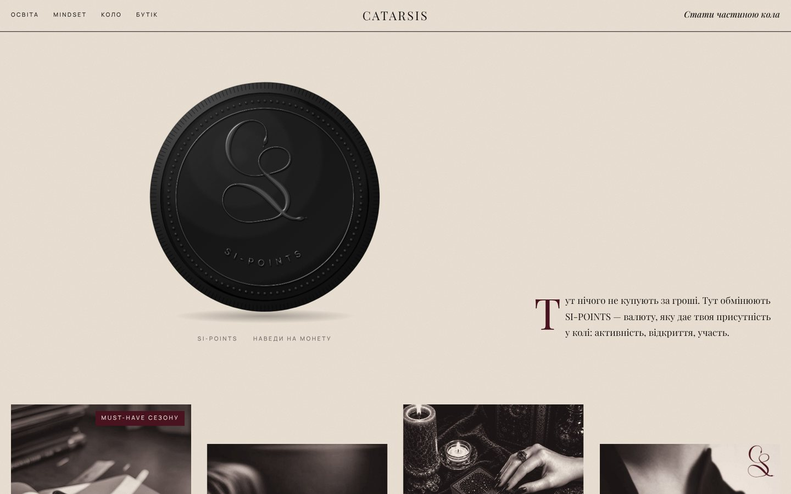
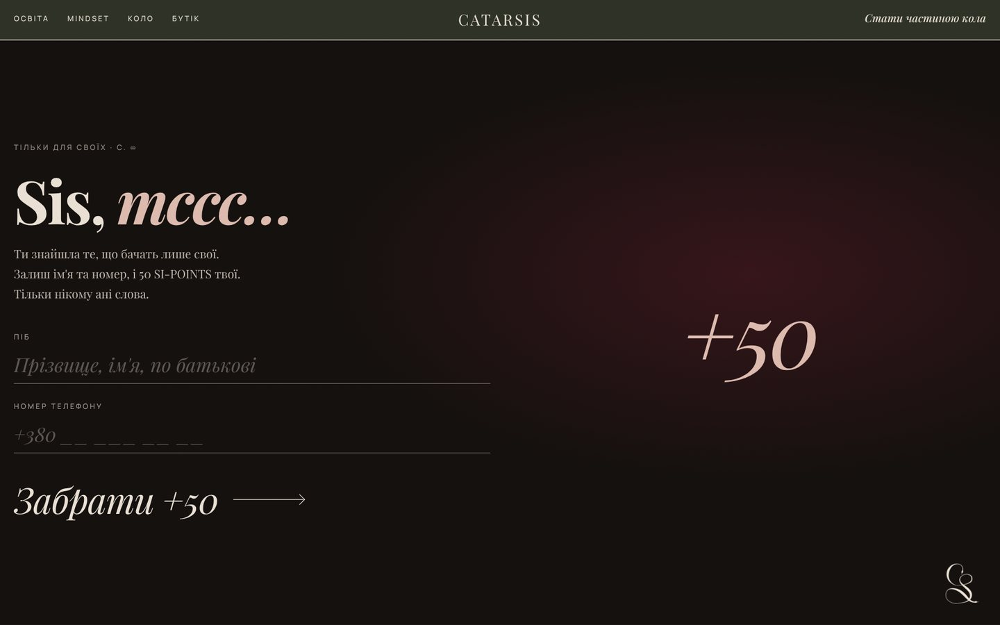
Голос редакції
Тексти написані як журнал, а не як продаж: лист редактора-маніфест, рубрики з підзаголовками-цитатами, короткі підписи до фото. Сім сфер освіти пов'язано з чакральною системою — від тілесності до внутрішньої опори, знизу вгору.
Місця для живих інтерв'ю й анонсів позначено як заготовки: клуб заповнює їх сам, дизайн від цього не ламається.
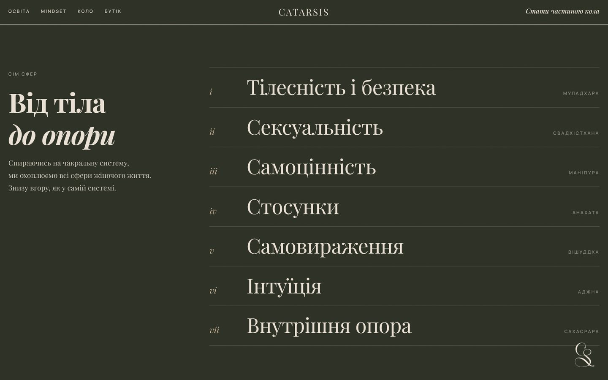
Номер цілком
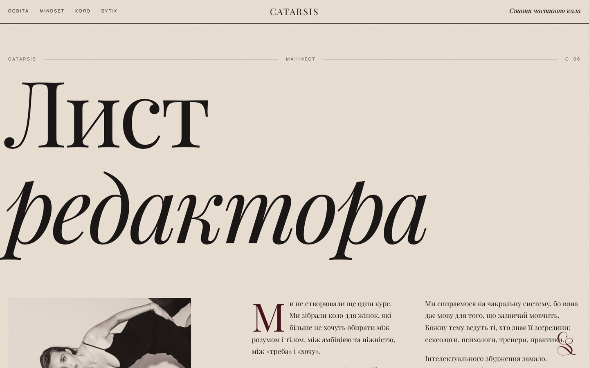
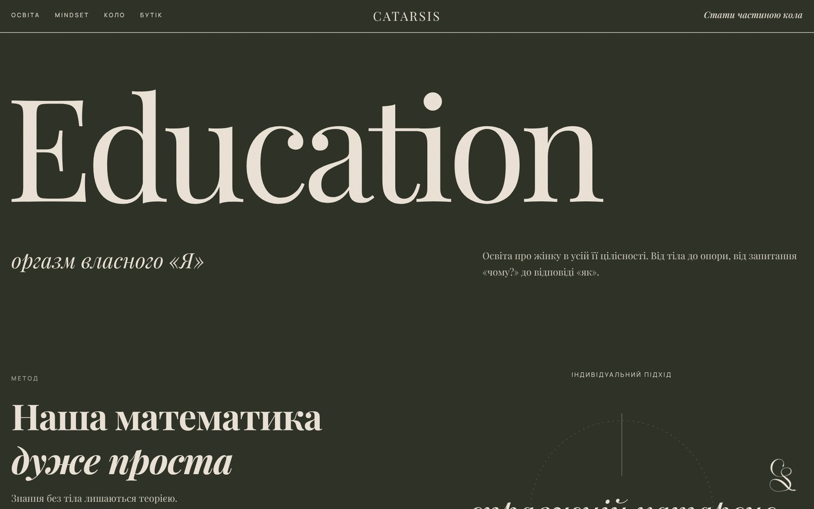
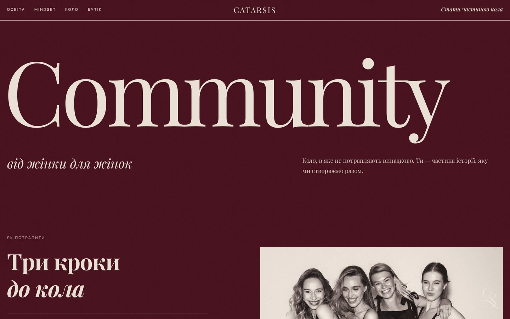
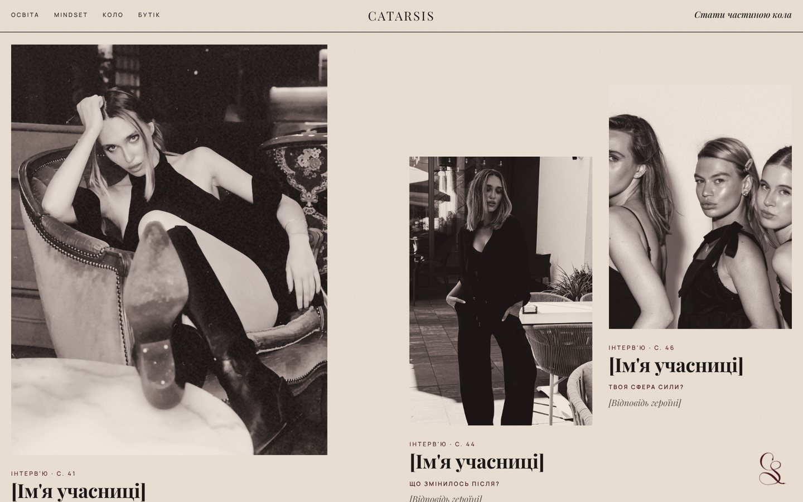
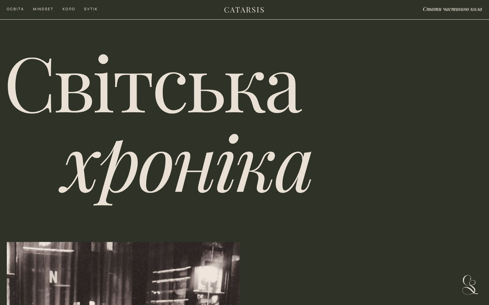
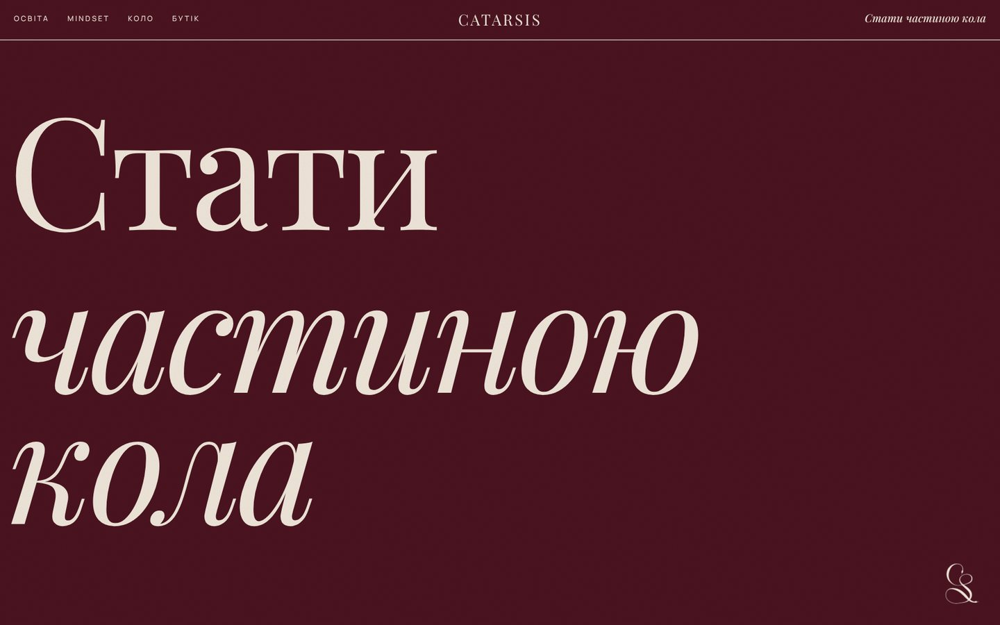
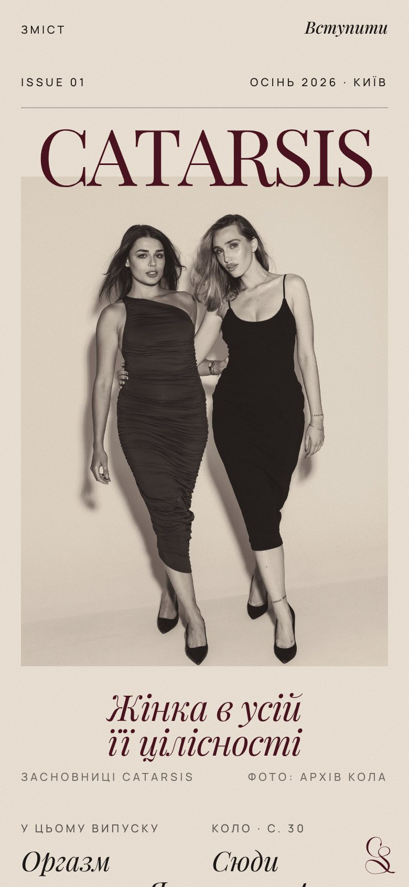
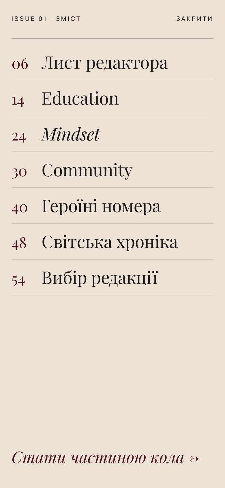
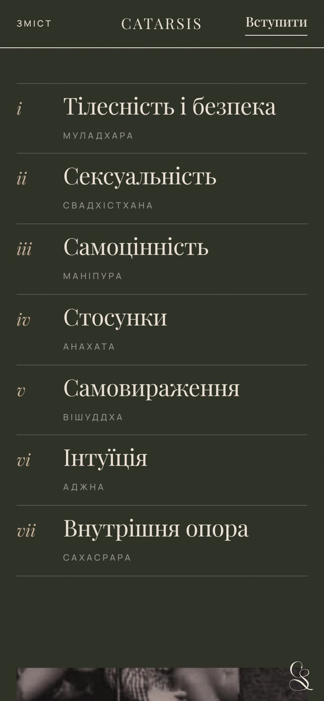
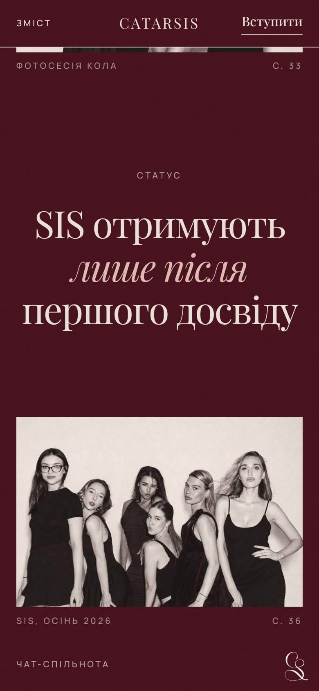
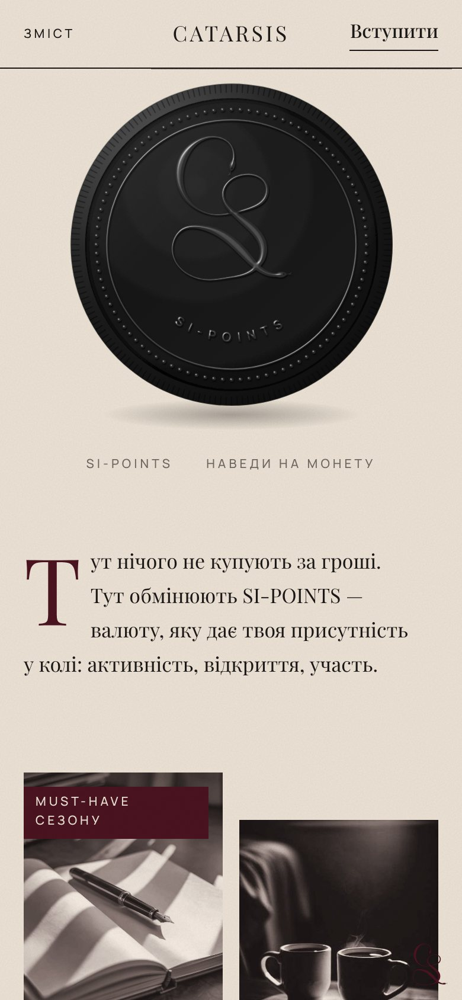
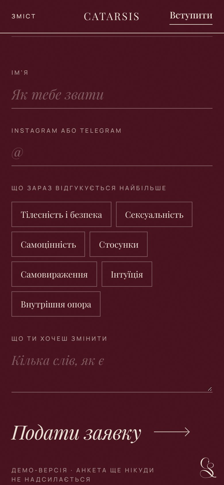
Під обкладинкою
- Чистий HTML, CSS і JavaScript, без бібліотек і конструкторів. Інтро, монета й тріщини намальовані в SVG.
- Сторінка важить близько 165 КБ коду, фото винесено окремими файлами й вантажаться ліниво, коли до них доходить прокрутка.
- Сітка на 12 колонок з асиметричною версткою: текст заходить на фото, як у журналі. На телефоні вона перебудовується в одну-дві колонки.
- Анкети перевіряють поля й підказують, чого бракує.
- Налаштування «зменшити анімацію» вимикає інтро й рух, сторінка лишається повністю робочою.
Що потрібно для справжнього запуску: підключити анкети до Telegram або CRM, додати справжні фото й інтерв'ю героїнь, анонси подій і правила нарахування SI-POINTS.